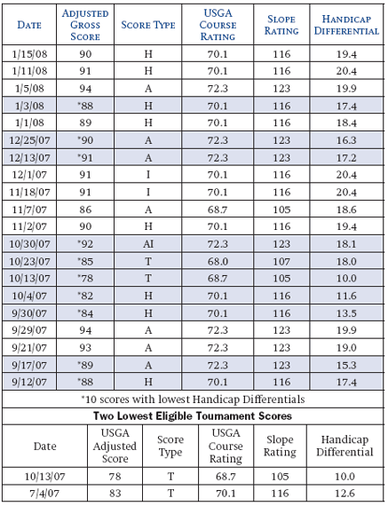
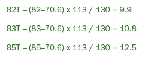
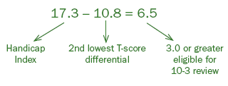
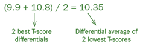
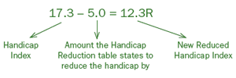
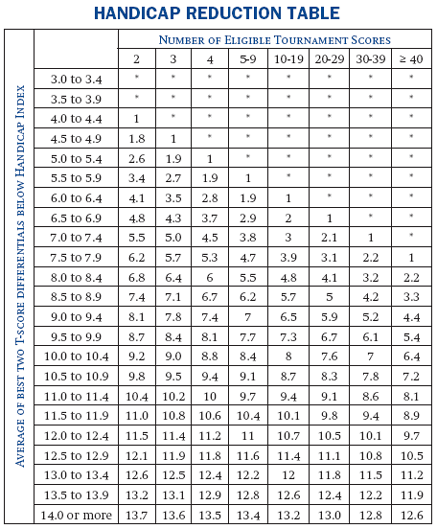
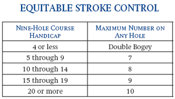

Section 10 USGA HANDICAP FORMULA
Definitions
Within each section, all defined terms are in italics and are listed alphabetically in Section 2 - Definitions.
Potential ability is defined by the term Handicap Index and is measured through a calculation using the player's best scores. These best scores are determined by calculating the Handicap Differential for each score. The Handicap Index is calculated by taking 96 percent of the average of the best Handicap Differential(s), and applying Section 10-3 for players with two or more eligible tournament scores.
A Handicap Differential is computed from four elements: adjusted gross score, USGA Course Rating, Slope Rating, and 113 (the Slope Rating of a course of standard difficulty). To determine the Handicap Differential, subtract the USGA Course Rating from the adjusted gross score; multiply the difference by 113; and divide the resulting number by the Slope Rating. Round the final number to the nearest tenth.
 a. Plus Handicap Differential
a. Plus Handicap Differential
When the adjusted gross score is higher than the USGA Course Rating, the Handicap Differential is a positive number. The following is an example for determining a Handicap Differential using an adjusted gross score of 95 made on a course with a USGA Course Rating of 71.5 and a Slope Rating of 125:
| Adjusted Gross Score - USGA Course Rating: | 95 - 71.5 = 23.5 |
| Difference x Standard Slope Rating: | 23.5 x 113 = 2655.5 |
| Result / Slope Rating: | 2655.5 / 125 = 21.24 |
| Handicap Differential (rounded): | 21.2 |
 b. Minus Handicap Differential
b. Minus Handicap Differential
When the adjusted gross score is lower than the USGA Course Rating, the Handicap Differential is a negative number. The following is an example for determining a Handicap Differential using an adjusted gross score of 69 made on a course with a USGA Course Rating of 71.5 and a Slope Rating of 125:
| Adjusted Gross Score - USGA Course Rating: | 69 - 71.5 = -2.5 |
| Difference x Standard Slope Rating: | -2.5 x 113 = -282.5 |
| Result / Slope Rating: | -282.5 / 125 = -2.26 |
| Handicap Differential (rounded): | -2.3 |
The Handicap Index formula is based on the best Handicap Differential(s) in a player's scoring record. If a player's scoring record contains 20 scores, the best 10 Handicap Differentials of the most recent 20 scores are used to calculate the Handicap Index. As the number of scores in the scoring record decreases, the percentage of scores used in a scoring record decreases from the maximum of the best 50 percent. If the scoring record contains 9 or 10 scores, only the best three scores (30 to 33 percent) in the scoring record will be used. Thus, the accuracy of a player's Handicap Index is directly proportional to the number of acceptable scores posted. A Handicap Index must not be issued to a player who has returned fewer than five acceptable scores. The following procedures illustrate how an authorized golf association, golf club, and computation services calculate a player's Handicap Index.
The procedure for calculating a Handicap Index is as follows:
Step 1: Use the table below to determine the number of Handicap Differential(s) to use:

|
Step 2: Determine Handicap Differential(s);
Step 3: Average the Handicap Differential(s) being used;
Step 4: Multiply the average by .96*;
Step 5: Delete all numbers after the tenths' digit (truncate). Do not round to the nearest tenth.
Example 1: Fewer than 20 scores (11 scores available).
| Total of lowest 4 Handicap Differentials: | 104.1 |
| Average (104.1 / 4): | 26.025 |
| Multiply average by .96: | 24.984 |
|
Delete all numbers after the tenth digit (truncate). Do not round to the nearest tenth: |
24.9 |
| Handicap Index : | 24.9 |
* Bonus for Excellence is the incentive for players to improve their golf games that is built into the USGA Handicap System. It is the term used to describe the small percentage below perfect equity that is used to calculate a Handicap Index (96 percent). As a Handicap Index improves (gets lower), the player has a slightly better chance of placing high or winning
a handicap event.
Example 2: Twenty scores available. The following is an example of a Handicap Index calculation for a player with 20 scores.
| Total of 10 lowest Handicap Differentials: | 154.8 |
| Average (154.8 / 10): | 15.48 |
| Average multiplied by .96: | 14.861 |
| Delete all digits after tenths: | 14.8 |
| Handicap Index : | 14.8 |
Step 6: Apply Section 10-3 for players with two or more eligible tournament scores.
|  |
Using the definition of a tournament score (see tournament score and Decisions 10-3/1 through 10-3/6), the Committee (preferably the Handicap Committee in consultation with the Committee in charge of the competition) must determine in advance whether a score is to be designated as a tournament score that is to be identified by the letter "T" when posted (e.g., 82T). These scores are often referred to as "T-Scores" as in Section 10-3c.
 a. Procedure
a. Procedure
The following procedure must be used as an alternate calculation of a Handicap Index for players with two or more eligible tournament scores. A player's Handicap Index may be reduced under this procedure when a player has a minimum of two eligible tournament score differentials that are at least 3.0 better than the player's Handicap Index calculated under Section 10-2.
The Handicap Committee or handicap computation service must apply the following steps to determine if there is a reduction in Handicap Index calculated under Section 10-2.
 b. Steps
b. Steps
Example: A player with a Handicap Index of 17.3 has three eligible tournament scores, an 82T, 83T and 85T. Two of these eligible tournament scores, an 82T and 83T, produce the lowest tournament score differentials. They were made on a course with a USGA Course Rating of 70.6 and a Slope Rating of 130.
Step 1: Calculate tournament score differentials by subtracting the USGA Course Rating from each eligible tournament score; multiply the result by 113, and divide by the Slope Rating for each course played. Select the two lowest eligible tournament score differentials.
|  |
Step 2: Subtract the second lowest differential from the Handicap Index under Section 10-2. Continue with the next step if the result is 3.0 or greater.
|  |
Step 3: Average the two lowest tournament score differentials.
|  |
2 best T-score Differential average of
differentials 2 lowest T-scores
Step 4: Subtract that average from the player's Handicap Index.

|
Step 5: Using the number (rounded to the nearest tenths place (7.0) from step 4 and the total number of tournament scores in the player's record (3), use the Handicap Reduction Table to determine the amount the player's Handicap Index is to be reduced.
Step 6: Subtract the table value from the player's Handicap Index. The result of that subtraction will be the player's reduced Handicap Index, provided that it is at least 1.0 less than the Handicap Index based on the formula in Section 10-2. The reduced Handicap Index is to be identified with the letter R when displayed in handicap reports or on the computer screen, e.g., 12.3R.
|  |
|  |
Example :
Value from Handicap Reduction Table 5.0
Handicap Index -- Table Value: 17.3 - 5.0 = 12.3
Reduced Handicap Index: 12.3R
 c. Counting Tournament Scores
c. Counting Tournament Scores
(i) T-Score Counter -- The number of eligible tournament scores will be counted on a revolving twelve-month basis. In order to keep track of the counter, but not save every T-Score, a counter for each month is needed. The T-Score counter will contain the sum of the latest twelve monthly counters plus any T-Scores older than one year that are a part of the twenty score history. The monthly counter will increase based on the date a score is processed, not the date of the score.
(ii) Best T-Score File -- Up to the best six eligible tournament scores are saved in a "Best T-Score File," separate from the player's handicap record of the latest 20 scores.
(iii) Adding T-Scores -- When a new tournament score is posted, it becomes part of the player's normal handicap record as a score and Handicap Differential. If the "Best T-Score File" has fewer than six eligible tournament scores, the new T-Score is added to that file. If the file already has six T-Scores, the new T-Score, if better than any T-Score in the file, is added to the file and the worst T-Score in the file is deleted, regardless of the date of the T-Score.
(iv) Discarding Old T-Scores -- At each handicap revision, each
T-Score in the "Best T-Score File" is checked to see if the score is older than one year and no longer part of the player's current twenty score history. If so, the score is deleted from the file. Deleted T-Scores are replaced by the best eligible tournament score (if any) in the player's handicap record that are not already in the "Best T-Score File."
 d. Duration and Variation of Reduction
d. Duration and Variation of Reduction
Handicap Index reduction for exceptional tournament scores is calculated at each handicap revision and may vary from revision to revision based on a number of factors. These factors may include the following:
• Additional tournament scores;
• Expiration of eligible tournament scores;
• Variation in 10-2 calculation;
• Fluctuation of 10-2 calculation in relation to the two lowest T-Scores.
 e. Handicap Committee Review of Reduction
e. Handicap Committee Review of Reduction
The Handicap Committee must review all reductions. As a result of review, the Handicap Committee may:
• Continue to allow the reduction to run its normal course, as described in Section 10-3d, or
• Further reduce the Handicap Index. For example, the Committee may conclude that the player's performance continues to be better than the potential ability indicated by the 10-3 reduction. In that case, the Committee replaces the reduced Handicap Index with an even lower reduced Handicap Index, continuing to review the reduction after each revision period (See Section 8-4e), or
• Override the reduction. For example, the Committee may cancel the reduction to a Handicap Index for a player who has been injured and whose reduction was based on early tournament scores prior to the injury. In that case, the reduction is inconsistent with the player's scoring record. The Committee replaces the reduced Handicap Index with the Handicap Index calculated under 10-2 and ceases designating it with an R. The Committee will have the option to continue to override after each revision period for as long as at least two exceptional tournament scores continue to trigger a 10-3 reduction. Once the player's scoring record contains fewer than two exceptional tournament scores, the Committee must cease overriding and rely on the normal calculation under 10-2.
• Adjust the amount of the reduction. The Handicap Committee may decide that the player's full 10-3 reduction does not reflect their potential ability, but a reduction is still necessary. In this case, the Handicap Committee may modify the amount of the reduction and the player's Handicap Index as calculated by Section 10-2. For example, if the player's 10-3 calculation is a 10.0R, but the 10-2 calculation is 15.0, the Handicap Committee could change the player's reduced value to a value of 12.5M. This does not completely override the player's reduction.
 f. Reporting Requirement
f. Reporting Requirement
Authorized golf associations and handicap computation services must report any Handicap Index reductions under this procedure (Section 10-3b) to the golf club. If computational reports are provided to the authorized golf association, the handicap computation service must also report any Handicap Index reductions to the authorized golf association. When a Handicap Index is reduced under this section, it must be identified with the letter R (e.g., 12.3R).
A player's Course Handicap is determined by multiplying a Handicap Index by the Slope Rating of the course played and then dividing by 113. (See Section 3-3.) The resulting figure is rounded off to the nearest whole number (.5 or more is rounded upward).
 a. Nine-Hole Handicap Use and Identification
a. Nine-Hole Handicap Use and Identification
A nine-hole handicap is a Handicap Index (N) if the club follows the USGA Handicap System. A nine-hole handicap, or Handicap Index (N), may be used in inter-club play against other players with nine-hole handicaps. If a competition requires a Handicap Index, a Handicap Index (N) may be doubled for 18-hole play.
A player with both a Handicap Index and a Handicap Index (N) should use the Handicap Index (N) in inter-club nine-hole competition and the Handicap Index in 18-hole competition.
A player with only a Handicap Index playing in a nine-hole competition halves the Handicap Index and rounds the decimal upward to the nearest tenth, then converts it to a Course Handicap using the nine-hole Slope Rating from the Course Handicap Table for the tees being played.
 b. Method of Computation
b. Method of Computation
Golf clubs compute a Handicap Index (N) by applying nine-hole adjusted gross scores to the USGA Course Rating and Slope Rating of the nine holes played to determine Handicap Differentials.
Note : Players with a Handicap Index (N) who play an 18-hole round, must post two nine-hole scores to their scoring record (N).
Example: For a nine-hole adjusted gross score of 45 with a nine-hole USGA Course Rating of 36.2 and a Slope Rating of 121, the nine-hole Handicap Differential is (45 - 36.2) x 113 / 121 = 8.2. If the average of the best ten nine-hole Handicap Differentials is 8.9, then the Handicap Index (N) is 8.9 x .96 = 8.5. It is posted as "8.5N."
 c. Nine-hole Equitable Stroke Control
c. Nine-hole Equitable Stroke Control
See definition of Equitable Stroke Control.
|  |
Example: A player with a nine-hole Course Handicap of 12 must adjust to a maximum score of 8 for any hole, regardless of par.
 d. Maximum Nine-Hole Handicap
d. Maximum Nine-Hole Handicap
The maximum Handicap Index (N) is 18.2 for men and 20.2 for women.
Note : A maximum Handicap Index will convert to a Course Handicap that exceeds these numbers on golf courses with a Slope Rating greater than 113.
A player may have a local handicap above these limits, but it must be identified as a local handicap by the letters "NL" following the number on a handicap card or report (e.g., 24.5NL). (See handicap type.) When such a local handicap is used for inter-club play, the USGA recommends that it be reduced to the maximum Handicap Index (N) specified above.